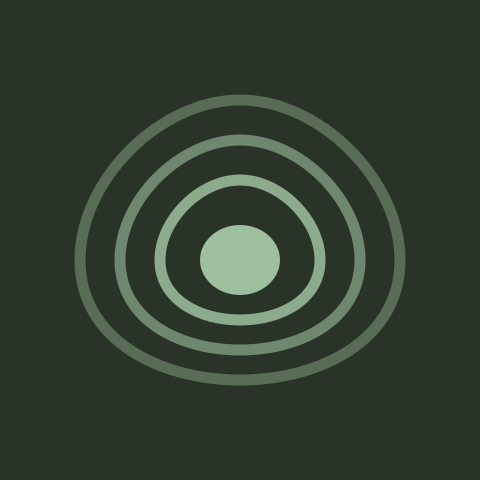
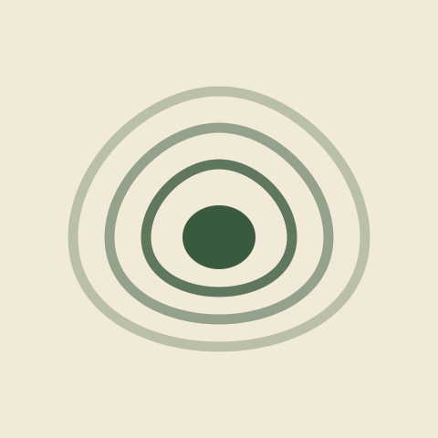
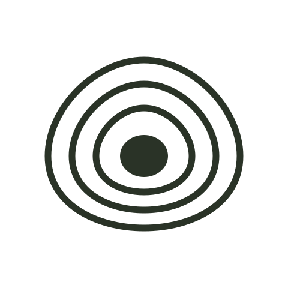
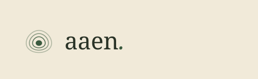
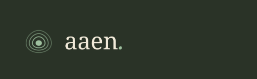
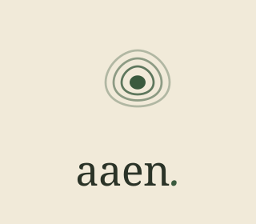
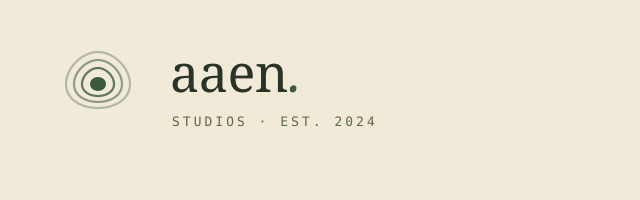

The Surveyors · Brand System
This is the full brand system for aaen studios under direction 13 — Topographic Contour. Every color, typeface, and token below traces back to one idea: software built like cartography. Read the landscape, then lay the path.
● Live
Two families, rationed strictly. Paper carries the page; ink & moss carry the brand. Clay and ochre are accents only — they mark paths, blazes, and warnings, never bulk fills.
Paper
#F1EAD9
Page background. Warm aged paper, never pure white.
Paper Deep
#E7DEC8
Cards, stages, inset surfaces.
Ink
#2A3327
Primary text, buttons, logo strokes.
Ink Soft
#5A6647
Ledes, captions, secondary text.
Moss
#3A5A3E
Contour lines, links, eyebrows, active states.
Moss Deep
#244028
Hover states, dark surfaces.
Clay
#B5895A
Rationed. Callouts, dividers, clear-space guides.
Ochre
#C8782A
Rationed further. Errors, warnings, do-not markers.
Stone
#8A8772
Hairlines, meta text, disabled.
Never use clay or ochre on more than ~5% of any view. They are blazes on a tree, not the forest.
Fraunces is the voice — headlines and ledes. Inter is the workhorse — body and UI. JetBrains Mono is the surveyor’s notebook — coordinates, labels, data.
The mark is a summit seen in contour: concentric rings closing toward a high point. It reads as both a topographic peak and a target — terrain to be understood, then aimed at.

reversed · on ink
reversed · light badge
monoline · single-color print
horizontal · primary
horizontal · reversed
stacked
full · with descriptorClear space equals the height of the mark’s inner ring (x), on all sides — nothing may enter it. On screen the mark is always rendered on its square canvas, which carries that padding by default. Minimum printed width is 24mm; on screen, 120px — below that the contour rings collapse and the mark loses its meaning.
The dashed clay box marks the x clear-space unit — the radius of the mark’s innermost ring. The square canvas pads the mark symmetrically, so clear space is automatic wherever it is dropped.
min: 120px screen / 24mm print
The mark is built on a 48×48 survey grid. Four concentric rings close toward a summit point; each ring sits one ring-width inside the last. The geometry never changes — only the stroke treatment (moss, monoline, reversed) and the canvas do.
Radii stay small (2–4px) — terrain isn’t bubbly. The only pill shape is reserved for tags, the surveyor’s labels.
case · 01
A data platform for climate researchers. We mapped six months of user interviews before writing code.
case · 02
Wayfinding software for a national trail network. Built to last the season and the next decade.
case · 03
An offline-first journal for field biologists. Quiet, patient, designed to age well.
Callouts use a clay left-rule — the blaze color. They carry context, not marketing.
A small family of 6 UI icons drawn in the same contour-line language: 1.5px stroke, round caps, moss color. They mark places on the map — never decorate them.
Source: assets/svg/icon-set.svg
The palette was chosen for readability first. Every approved text token passes WCAG AA at body sizes. The rationed accents (clay, ochre) are decorative-only below 3:1 — never convey information solely with color.
Clay and ochre must never be used for text convey information. If in doubt, use ink on paper — the maps are readable because the ink is dark, not because it’s colorful.
The voice is a careful guide who has walked this terrain before. Plain verbs, concrete nouns, no hype. It names things by what they do, admits uncertainty honestly, and treats the reader as a competent adult.
● We sound like this
× Not like this
SVGs are the canonical source — they render correctly in any browser. PNGs are raster fallbacks. For production, link the SVG. For slides, docs, or tools that don’t support SVG, use the PNG at the largest available size.
PNG text may fall back to system fonts because Fraunces isn’t installed locally. The SVGs are the canonical source — they render correctly in every browser that loads Google Fonts.
Three principles: pulse (the summit signals attention), sweep (the contour line draws itself across the page), draw (a ring reveals its shape over 1.5s). All three respect prefers-reduced-motion.
Animations are present on this page. If your device prefers reduced motion, they are disabled.
Use pulse on one key element per screen — a saved state, a success marker. Let it breathe, then stop.
Don’t animate the contour field. It is terrain, not weather. Still backgrounds keep the brand grounded.
{kind=link}
{kind=link}
{kind=link}
{kind=link}
{kind=link}
{kind=link}
{kind=link}
{kind=link}
{kind=link}
{kind=link}
{kind=link}
{kind=link}
{kind=link}
{kind=link}
{kind=link}
{kind=link}
{kind=link}
{kind=link}
{kind=link}
{kind=link}
{kind=link}
{kind=link}
{kind=link}
{kind=link}
{kind=link}
{kind=link}
{kind=link}
{kind=link}
{kind=link}
{kind=link}
{kind=link}
{kind=link}
{kind=link}
{kind=link}